Каскадия
Рэнди Флинн. 1–4 игрока. Вы собираете мозаику ареалов Тихоокеанского Северо-Запада и заселяете её животными. Метка «стр. N» открывает страницу оригинального буклета.
Шпаргалка
Ваш ход
- Возьмите одну из 4 пар: жетон ареалов + фишка животного.
- Добавьте жетон и фишку в свою экосистему, в любом порядке.
- Выложите в игровую зону новый жетон из стопки и новую фишку из мешочка.
- Партия — ровно 20 ходов у каждого.
Куда класть
- Жетон: хотя бы одной стороной к своему жетону. Нельзя класть поверх и сдвигать выложенные.
- Фишка: только на жетон, где нарисован её вид, и только если на жетоне нет другой фишки.
- Фишка на
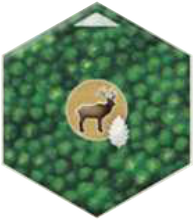
заповедник → возьмите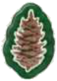
жетон природы. - Некуда или не хотите ставить фишку — верните её в мешочек.
Перенаселение и жетоны природы
- 4 одинаковые фишки в зоне — обновите их обязательно.
- 3 одинаковые — решает активный игрок, 1 раз в ход.
- Потратьте , чтобы взять любой жетон + любую фишку или обновить любое число фишек.
- В конце игры каждый непотраченный = 1 очко.
Очки в конце
- Карты целей — по 1 на каждый вид животных.
- Ареалы — 1 очко за жетон в наибольшем ареале каждого типа:
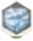
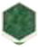
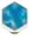
- Лидерство в ареалах — за самые большие ареалы среди всех игроков.
- Жетоны природы — по 1 очку.
- Ничья → побеждает тот, у кого больше жетонов природы.
Об игре стр. 2
В «Каскадии» игроки соревнуются в создании многообразных экосистем Тихоокеанского Северо-Запада, выкладывая из жетонов ареалов и фишек диких животных удивительные мозаики. В каждой партии цели игры, связанные с местной фауной, сочетаются неповторимым образом.
Игроки заселяют свои экосистемы животными в соответствии с условиями на картах целей и попутно соревнуются в создании крупных природных ареалов. Уделяйте внимание и формируемым ареалам, и населяющим их животным, чтобы обустроить наиболее гармоничную экосистему в Каскадии.
Состав игры стр. 3
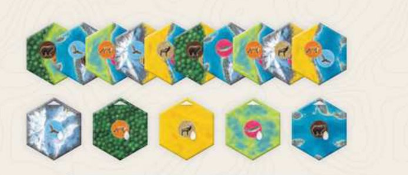
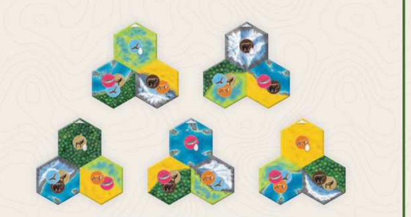
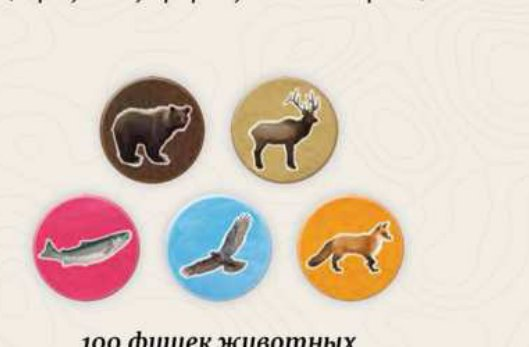
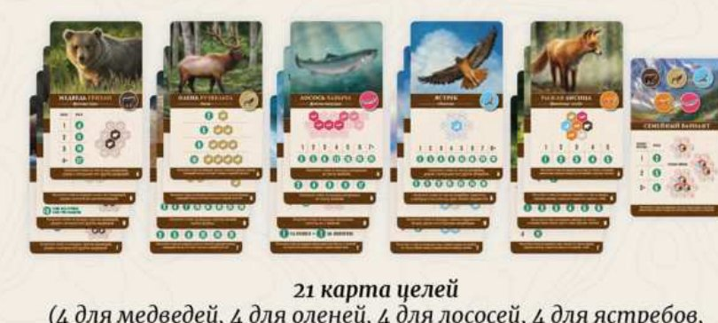
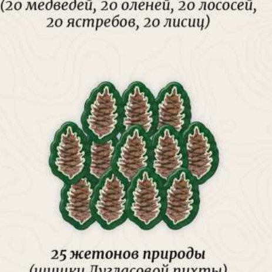
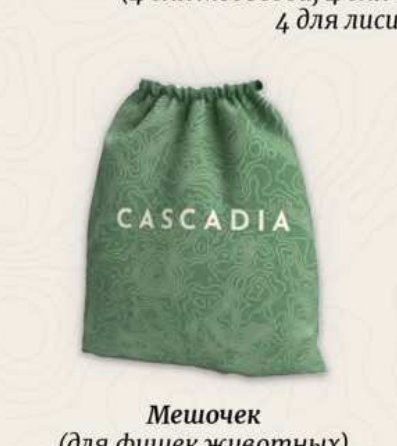
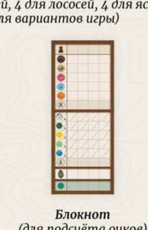
Подготовка к игре стр. 4
- Поместите все фишки животных в мешочек и перемешайте их.
Примечание: если хотите, чтобы при игре с 1–3 участниками животные разных видов были представлены более равномерно, положите в мешочек по 5 фишек каждого вида за участника, а не все фишки. Однако при этом некоторые достижения станут недоступны.
- Оставьте в игре нужное число жетонов ареалов. Выберите их случайно, не глядя на лицевую сторону:
Игроков 2 3 4 Жетонов в игре 43 63 83 Вернуть в коробку 42 22 2 То есть 20 жетонов за игрока + 3. Перемешайте выбранные жетоны и сложите их в стопки — любое количество — лицевой стороной вниз так, чтобы все могли дотянуться.
- Случайно выберите по 1 карте цели для каждого из 5 видов животных и положите их в центр. Остальные верните в коробку.
Первая партияИспользуйте карты, помеченные буквой «А» в правом нижнем углу.
- Каждый игрок берёт случайный начальный жетон ареалов и кладёт перед собой лицом вверх. Остальные начальные жетоны — в коробку.
- Возьмите 4 жетона ареалов из любых стопок и положите лицом вверх в игровую зону.
- Возьмите 4 фишки животных из мешочка по одной и положите слева направо рядом с жетонами так, чтобы получилось 4 пары.
- Сложите жетоны природы так, чтобы все могли дотянуться.
- Первым игроком становится тот, кто последним видел любое животное из игры. Можно выбрать и случайно.
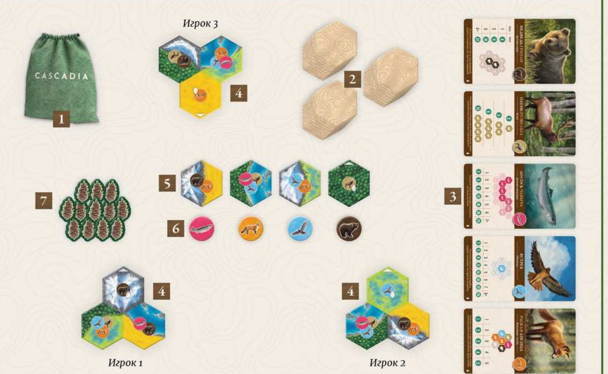
Особенности подготовки к одиночной игре — в разделе «Одиночная игра».
Краткое описание игры стр. 5
Участники ходят по очереди, начиная с первого игрока и далее по часовой стрелке, пока не наступит конец партии.
В свой ход игрок выбирает пару из жетона ареалов и фишки животного и добавляет их к своей экосистеме. Экосистема — это совокупность всех жетонов и фишек у игрока, включая его начальный жетон ареалов.
В конце каждого хода на место взятых жетона и фишки выкладывается новый жетон из любой стопки и новая фишка из мешочка.
Партия завершается, если в конце хода игрока нельзя выложить новый жетон ареалов, так как стопки опустели. Каждый участник сделает ровно 20 ходов. После этого игроки подсчитывают очки, и побеждает тот, у кого их больше.
Ход игры стр. 6–7
1. Выберите жетон ареалов и фишку животного
В начале хода в центре игровой зоны лежат 4 жетона ареалов и 4 фишки животных, объединённые в пары — они называются существующими. Вы выберете одну из 4 пар.
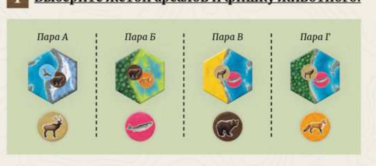
Перенаселение животных
Прежде чем выбрать пару, проверьте, нет ли перенаселения.
4 фишки одного вида — обновить обязательно
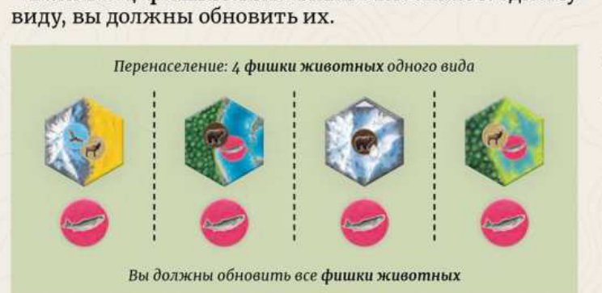
Отложите все 4 фишки в сторону. Затем берите фишки из мешочка по одной и кладите слева направо рядом с жетонами, пока не получится 4 новые пары. Это может повториться несколько раз за ход игрока.
3 фишки одного вида — по желанию
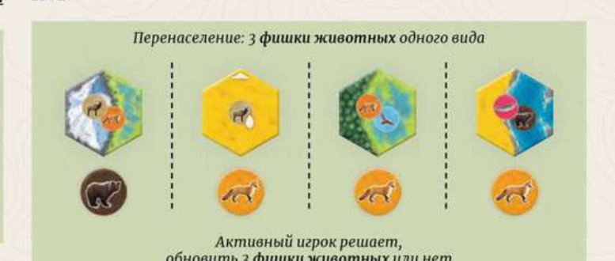
Если решили обновить, отложите эти 3 фишки и доберите из мешочка до 3 новых пар. Такое обновление можно сделать только 1 раз в ход.
Устранив перенаселение, верните отложенные фишки обратно в мешочек.
Жетон природы вместо обычного выбора
Обычно вы берёте существующую пару. Но вы можете потратить жетон природы, чтобы сделать одно из двух:
- Вместо одной из существующих пар взять любой из четырёх жетонов ареалов и любую из четырёх фишек животных.
- Обновить любое количество фишек животных, прежде чем взять пару — по правилам обновления при перенаселении.
За ход можно потратить любое количество жетонов природы. Потраченные жетоны возвращаются в запас. Если жетонов природы у вас нет, вы обязаны выбрать одну из существующих пар.
2. Добавьте жетон ареалов в экосистему
- А. Новый жетон должен хотя бы одной стороной соприкасаться с другим вашим жетоном — выложенным ранее или начальным.
- Б. Нельзя класть новый жетон поверх других жетонов или сдвигать ранее выложенные.
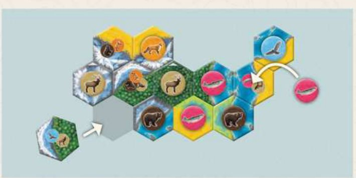
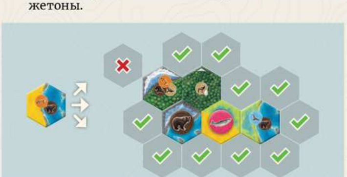
Добавьте фишку животного
- А. На жетоне не должно быть другой фишки животного: на каждом жетоне всегда не более одной фишки.
- Б. На жетоне должно быть изображено животное того же вида: на каждом жетоне изображено от 1 до 3 животных.
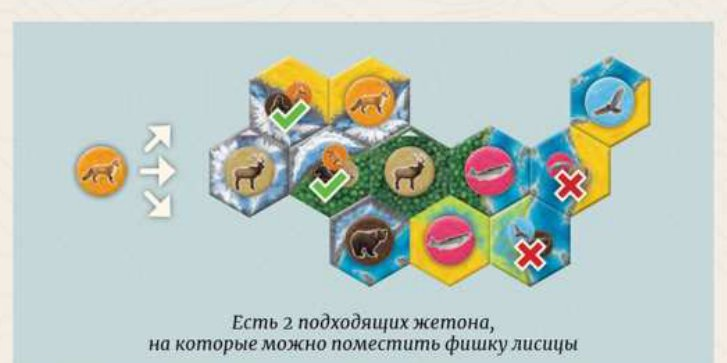
Фишку можно поставить как на жетон, выложенный в этом ходу, так и на любой другой подходящий. Если подходящего жетона нет или вы не хотите ставить фишку — верните её в мешочек.
Если вы помещаете фишку на жетон заповедника, возьмите жетон природы.
Поместив жетон и фишку, выложите на освободившееся место новый жетон из любой стопки и новую фишку из мешочка. Не сдвигайте существующие пары, просто заполняйте пустое место. Ход переходит к следующему игроку по часовой стрелке.
Виды жетонов стр. 8
На каждом жетоне ареалов изображены 1 или 2 типа ареала, а также 1, 2 или 3 вида животных.
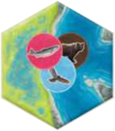
Два типа ареала
На этом жетоне болота и реки. Сюда можно поместить
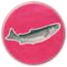
лосося,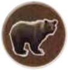
медведя или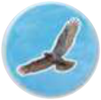
ястреба.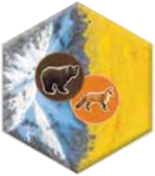
Горы и прерии
На этом жетоне горы и прерии. Сюда можно поместить медведя или
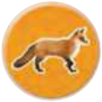
лисицу.Жетон заповедника
Отмечен значком домика в верхнем углу. Поместив сюда фишку животного, возьмите жетон природы.
Конец партии и подсчёт очков стр. 8–9
Если в конце хода игрока нельзя выложить новый жетон ареалов, потому что стопки опустели, партия тут же завершается. Каждый участник сделает ровно 20 ходов. Очки считаются за карты целей, ареалы, лидерство в ареалах и жетоны природы.
1. Карты целей
Каждый участник подсчитывает очки за животных согласно выбранным на игру картам целей.
2. Ареалы
Каждый участник получает по 1 очку за каждый жетон в своём наибольшем ареале каждого из 5 типов: горы, леса, прерии, болота, реки.
Жетоны входят в единый ареал, если соприкасаются хотя бы одной совпадающей стороной.
3. Лидерство в ареалах
Игроки получают очки за самые большие ареалы среди всех экосистем, в зависимости от числа участников.
| Игроков | 1-е место | 2-е место |
|---|---|---|
| 2 | 2 очка, при ничьей по 1 | — |
| 3–4 | 3 очка | 1 очко |
- Вдвоём: каждый тип ареала приносит 2 очка владельцу самого большого ареала этого типа. В случае ничьей оба игрока получают по 1 очку. Второе место не приносит очков.
- Втроём и вчетвером: 3 очка за первое место и 1 очко за второе. Если ничья у двух игроков, каждый получает 2 очка, а второе место не приносит очков. Если ничья у трёх или четырёх игроков, каждый получает по 1 очку, а следующий результат не приносит очков. Ничья за второе место никогда не приносит очков.
- В одиночной игре: 2 очка за каждый ареал, состоящий хотя бы из 7 жетонов.
4. Жетоны природы
Каждый игрок получает по 1 очку за каждый свой непотраченный жетон природы.
Сложите все набранные очки. Побеждает игрок с наибольшим количеством очков. В случае ничьей побеждает претендент с наибольшим количеством жетонов природы. Если ничья сохраняется, претенденты делят победу.
Пример подсчёта стр. 9
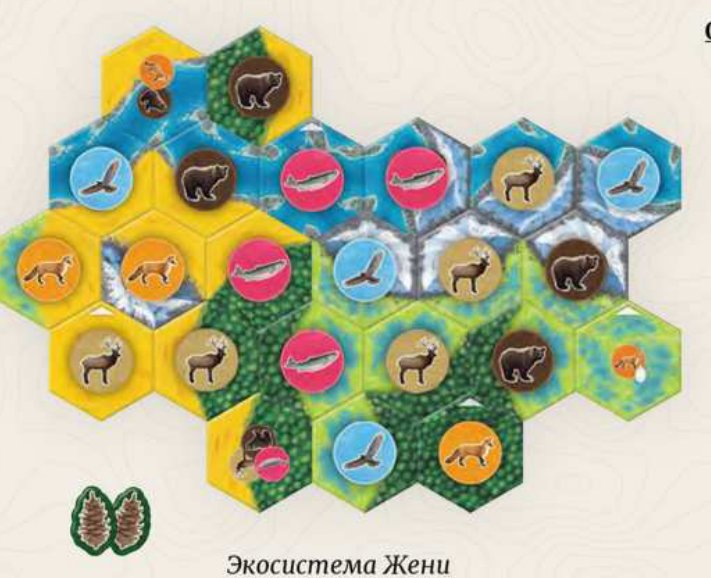
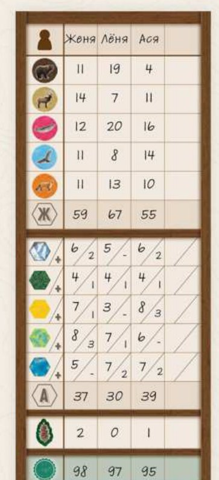
- Две пары медведей: 11 очков.
- Линии из двух и из трёх оленей: 14 очков — 5 + 9.
- Миграция из 4 лососей: 12 очков.
- Четыре ястреба-одиночки: 11 очков.
- Животные-соседи трёх лисиц: 11 очков — 3 + 5 + 3.
- Ареал из шести гор: 6 очков; ничья с одним игроком за самый большой ареал: 2 очка.
- Ареал из четырёх лесов: 4 очка; ничья с двумя игроками: 1 очко.
- Ареал из семи прерий: 7 очков; второе место по величине: 1 очко.
- Ареал из восьми болот: 8 очков; самый большой ареал среди всех: 3 очка.
- Ареал из пяти рек: 5 очков; самый маленький ареал из всех: 0 очков.
- Два непотраченных жетона природы: 2 очка.
Карты целей стр. 11
Нажмите на карточку, чтобы прочитать полное пояснение из буклета. В каждой партии используется по одной карте на вид животных.
Медведи стр. 11
Медведи приносят очки за группы разных размеров. Эти группы могут быть любых форм и располагаться в любом направлении, но разные группы не должны находиться рядом друг с другом. Группа принесёт очки, только если в ней будет точное количество медведей, указанное на карте.
Пары медведей
Чем больше у вас пар медведей, тем больше очков.
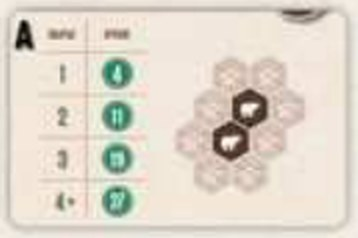
Карта А. Получите тем больше очков, чем больше у вас пар медведей.
Медведи приносят очки за группы разных размеров. Эти группы могут быть любых форм и располагаться в любом направлении, но разные группы не должны находиться рядом друг с другом. Группа принесёт очки, только если в ней будет точное количество медведей, указанное на карте.
стр. 11 буклета
Тройки медведей
10 очков за каждую группу ровно из 3 медведей.
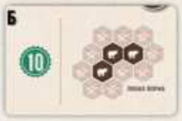
Карта Б. Получите 10 очков за каждую группу ровно из 3 медведей.
Медведи приносят очки за группы разных размеров. Эти группы могут быть любых форм и располагаться в любом направлении, но разные группы не должны находиться рядом друг с другом. Группа принесёт очки, только если в ней будет точное количество медведей, указанное на карте.
стр. 11 буклетаГруппы 1–3 медведей
Очки за группы из 1, 2 и 3 медведей, плюс 3 очка за все три размера.
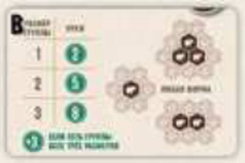
Карта В. Получите очки за каждую группу размером от 1 до 3 медведей и дополнительно 3 очка, если у вас есть группы всех трёх размеров.
Медведи приносят очки за группы разных размеров. Эти группы могут быть любых форм и располагаться в любом направлении, но разные группы не должны находиться рядом друг с другом. Группа принесёт очки, только если в ней будет точное количество медведей, указанное на карте.
стр. 11 буклетаГруппы 2–4 медведей
Очки за каждую группу размером от 2 до 4 медведей.
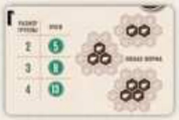
Карта Г. Получите очки за каждую группу размером от 2 до 4 медведей.
Медведи приносят очки за группы разных размеров. Эти группы могут быть любых форм и располагаться в любом направлении, но разные группы не должны находиться рядом друг с другом. Группа принесёт очки, только если в ней будет точное количество медведей, указанное на карте.
стр. 11 буклета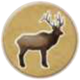
Олени стр. 11Олени приносят очки за свои группы. Большинство карт требует, чтобы эти группы были определённой формы. В отличие от групп медведей, группы оленей могут находиться рядом друг с другом, но каждый олень состоит только в одной группе и принесёт очки лишь раз. Выбирайте, к какой группе отнести оленя так, чтобы получить как можно больше очков.
Прямые линии
Очки за группы в виде прямых линий в любом направлении.
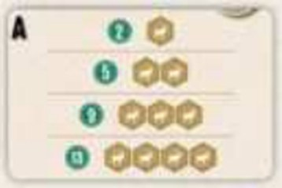
Карта А. Получите очки за группы в виде прямых линий, расположенных в любом направлении.
Олени приносят очки за свои группы. Большинство карт требует, чтобы эти группы были определённой формы. В отличие от групп медведей, группы оленей могут находиться рядом друг с другом, но каждый олень состоит только в одной группе и принесёт очки лишь раз. Выбирайте, к какой группе отнести оленя так, чтобы получить как можно больше очков.
стр. 11 буклетаУказанные формы
Очки за группы указанных на карте форм в любом направлении.
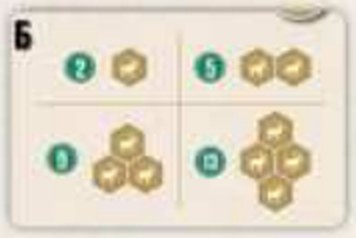
Карта Б. Получите очки за группы указанных форм, расположенные в любом направлении.
Олени приносят очки за свои группы. Большинство карт требует, чтобы эти группы были определённой формы. В отличие от групп медведей, группы оленей могут находиться рядом друг с другом, но каждый олень состоит только в одной группе и принесёт очки лишь раз. Выбирайте, к какой группе отнести оленя так, чтобы получить как можно больше очков.
стр. 11 буклетаЛюбая форма
Очки за каждую группу любой формы и размера.
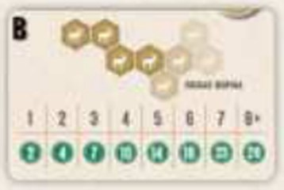
Карта В. Получите очки за каждую группу любой формы и размера.
Олени приносят очки за свои группы. Большинство карт требует, чтобы эти группы были определённой формы. В отличие от групп медведей, группы оленей могут находиться рядом друг с другом, но каждый олень состоит только в одной группе и принесёт очки лишь раз. Выбирайте, к какой группе отнести оленя так, чтобы получить как можно больше очков.
стр. 11 буклетаКольцо
Очки за группы в форме кольца или его части.
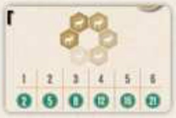
Карта Г. Получите очки за каждую группу, которая образует кольцо или его часть, как изображено на карте.
Олени приносят очки за свои группы. Большинство карт требует, чтобы эти группы были определённой формы. В отличие от групп медведей, группы оленей могут находиться рядом друг с другом, но каждый олень состоит только в одной группе и принесёт очки лишь раз. Выбирайте, к какой группе отнести оленя так, чтобы получить как можно больше очков.
стр. 11 буклетаЛососи стр. 11
Лососи приносят очки за миграции. Миграция — это группа, в которой каждый лосось соседствует не более чем с двумя другими лососями (это значит, что группа из 3 лососей в форме треугольника считается миграцией, но больше к этой миграции нельзя присоединить ни одного лосося). Рядом с миграциями не должно быть других лососей.
Миграции любого размера
Очки за каждую миграцию в зависимости от её размера (до 7+).
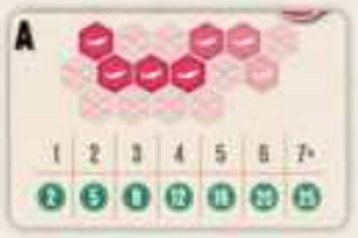
Карта А. Получите очки за каждую миграцию в зависимости от её размера.
Лососи приносят очки за миграции. Миграция — это группа, в которой каждый лосось соседствует не более чем с двумя другими лососями (это значит, что группа из 3 лососей в форме треугольника считается миграцией, но больше к этой миграции нельзя присоединить ни одного лосося). Рядом с миграциями не должно быть других лососей.
стр. 11 буклетаКороткие миграции
Очки за каждую миграцию в зависимости от её размера (до 5+).
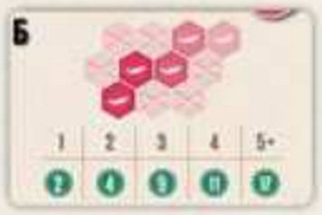
Карта Б. Получите очки за каждую миграцию в зависимости от её размера.
Лососи приносят очки за миграции. Миграция — это группа, в которой каждый лосось соседствует не более чем с двумя другими лососями (это значит, что группа из 3 лососей в форме треугольника считается миграцией, но больше к этой миграции нельзя присоединить ни одного лосося). Рядом с миграциями не должно быть других лососей.
стр. 11 буклетаМиграции от 3 лососей
Очки только за миграции хотя бы из 3 лососей.
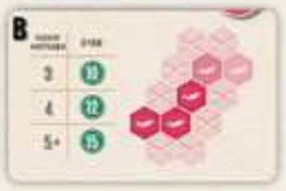
Карта В. Получите очки за каждую миграцию хотя бы из 3 лососей в зависимости от её размера.
Лососи приносят очки за миграции. Миграция — это группа, в которой каждый лосось соседствует не более чем с двумя другими лососями (это значит, что группа из 3 лососей в форме треугольника считается миграцией, но больше к этой миграции нельзя присоединить ни одного лосося). Рядом с миграциями не должно быть других лососей.
стр. 11 буклетаЛосось и соседи
1 очко за каждого лосося в миграции и за каждое соседнее животное.
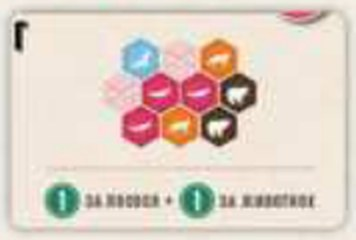
Карта Г. Получите за каждую миграцию хотя бы из 3 лососей по 1 очку за каждого лосося в миграции и за каждую фишку животного, находящуюся рядом с миграцией (вид животных не имеет значения).
Лососи приносят очки за миграции. Миграция — это группа, в которой каждый лосось соседствует не более чем с двумя другими лососями (это значит, что группа из 3 лососей в форме треугольника считается миграцией, но больше к этой миграции нельзя присоединить ни одного лосося). Рядом с миграциями не должно быть других лососей.
стр. 11 буклетаЯстребы стр. 11
Ястребы приносят очки за распространение по всей экосистеме: за ястребов-одиночек, за пары ястребов или за линии видимости между ястребами. Линия видимости — это прямая, проходящая между несоприкасающимися сторонами двух жетонов ареалов с фишками ястребов. Линии видимости прерываются только ястребами (а значит, линию видимости нельзя провести через третьего ястреба).
Ястребы-одиночки
Чем больше ястребов, рядом с которыми нет других ястребов.
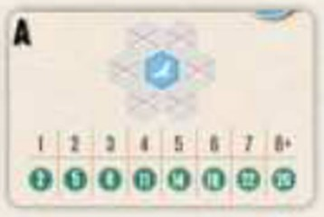
Карта А. Получите тем больше очков, чем больше у вас ястребов, рядом с которыми нет других ястребов.
Ястребы приносят очки за распространение по всей экосистеме: за ястребов-одиночек, за пары ястребов или за линии видимости между ястребами. Линия видимости — это прямая, проходящая между несоприкасающимися сторонами двух жетонов ареалов с фишками ястребов. Линии видимости прерываются только ястребами (а значит, линию видимости нельзя провести через третьего ястреба).
стр. 11 буклетаОдиночки на линиях видимости
Чем больше ястребов-одиночек, связанных линиями видимости.
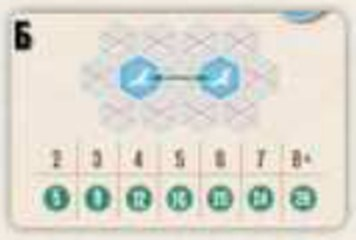
Карта Б. Получите тем больше очков, чем больше у вас ястребов-одиночек на линиях видимости.
Ястребы приносят очки за распространение по всей экосистеме: за ястребов-одиночек, за пары ястребов или за линии видимости между ястребами. Линия видимости — это прямая, проходящая между несоприкасающимися сторонами двух жетонов ареалов с фишками ястребов. Линии видимости прерываются только ястребами (а значит, линию видимости нельзя провести через третьего ястреба).
стр. 11 буклетаЛинии видимости
3 очка за каждую линию видимости между ястребами.
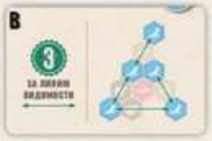
Карта В. Получите 3 очка за каждую линию видимости между ястребами.
Ястребы приносят очки за распространение по всей экосистеме: за ястребов-одиночек, за пары ястребов или за линии видимости между ястребами. Линия видимости — это прямая, проходящая между несоприкасающимися сторонами двух жетонов ареалов с фишками ястребов. Линии видимости прерываются только ястребами (а значит, линию видимости нельзя провести через третьего ястреба).
стр. 11 буклетаПары и виды на линии
Очки за пару ястребов тем больше, чем больше разных видов между ними.
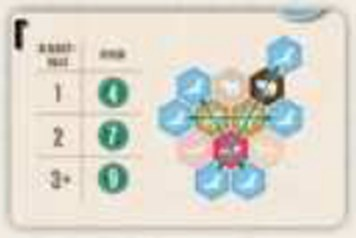
Карта Г. Получите тем больше очков за каждую пару ястребов, чем больше разных видов животных находится на линии видимости между ними. Каждый ястреб может быть частью только одной пары.
Ястребы приносят очки за распространение по всей экосистеме: за ястребов-одиночек, за пары ястребов или за линии видимости между ястребами. Линия видимости — это прямая, проходящая между несоприкасающимися сторонами двух жетонов ареалов с фишками ястребов. Линии видимости прерываются только ястребами (а значит, линию видимости нельзя провести через третьего ястреба).
стр. 11 буклетаЛисицы стр. 11
Лисицы приносят очки за соседство с другими животными. Каждая лисица или каждая пара лисиц приносит тем больше очков, чем лучше выполняется условие на карте цели (одинокую лисицу может окружать до 6 животных, пару лисиц — до 8).
Разные соседи
Чем больше разных видов рядом с лисицей (включая других лисиц).
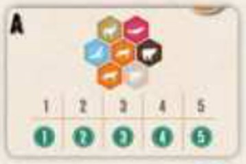
Карта А. Получите тем больше очков за каждую лисицу, чем больше разных видов животных находится рядом с ней (включая других лисиц).
Лисицы приносят очки за соседство с другими животными. Каждая лисица или каждая пара лисиц приносит тем больше очков, чем лучше выполняется условие на карте цели (одинокую лисицу может окружать до 6 животных, пару лисиц — до 8).
стр. 11 буклетаПары соседей
Чем больше видов, пары которых стоят рядом с лисицей.
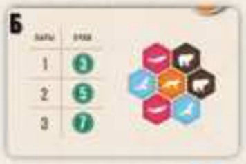
Карта Б. Получите тем больше очков за каждую лисицу, чем больше у вас разных видов животных, пары которых находятся рядом с ней (не учитывая других лисиц). Животные в парах не обязаны соседствовать.
Лисицы приносят очки за соседство с другими животными. Каждая лисица или каждая пара лисиц приносит тем больше очков, чем лучше выполняется условие на карте цели (одинокую лисицу может окружать до 6 животных, пару лисиц — до 8).
стр. 11 буклетаСамый частый сосед
Очки за самый многочисленный вид рядом с лисицей.
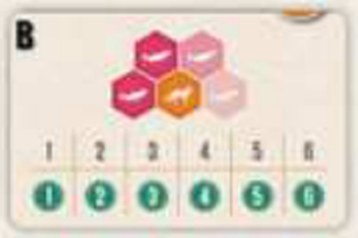
Карта В. Получите тем больше очков за каждую лисицу, чем больше животных одного вида находится рядом с ней (не учитывая других лисиц). Очки приносит только самый многочисленный вид животных.
Лисицы приносят очки за соседство с другими животными. Каждая лисица или каждая пара лисиц приносит тем больше очков, чем лучше выполняется условие на карте цели (одинокую лисицу может окружать до 6 животных, пару лисиц — до 8).
стр. 11 буклетаПары лисиц
Очки за пару лисиц: чем больше видов, пары которых рядом с ней.
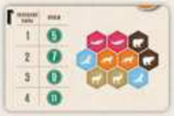
Карта Г. Получите тем больше очков за каждую пару лисиц, чем больше у вас разных видов животных, пары которых находятся рядом с ней (не учитывая другие пары лисиц). Животные в парах не обязаны соседствовать.
Лисицы приносят очки за соседство с другими животными. Каждая лисица или каждая пара лисиц приносит тем больше очков, чем лучше выполняется условие на карте цели (одинокую лисицу может окружать до 6 животных, пару лисиц — до 8).
стр. 11 буклетаОдиночная игра стр. 10
Подготовка. Проведите подготовку для игры вдвоём со следующими изменениями: возьмите начальный жетон ареалов только себе, а стопки жетонов ареалов расположите слева от игровой зоны.
Ход игры. Следуйте обычным правилам, но в конце каждого хода, прежде чем выложить новый жетон и фишку, убирайте в коробку крайний правый жетон и крайнюю правую фишку и сдвигайте оставшиеся жетоны и фишки вправо — это может создать новые пары. Затем выкладывайте 2 новых жетона и 2 новые фишки вместо обычных одного жетона и одной фишки.
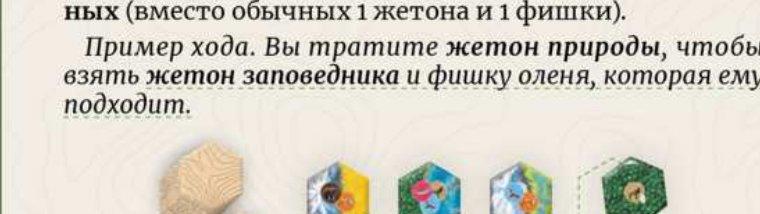
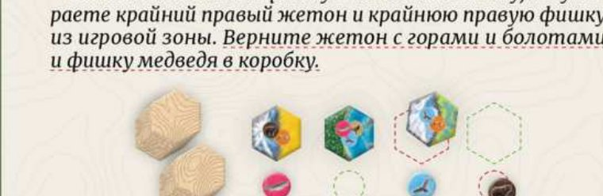
Конец партии. Вы сделаете ровно 20 ходов. Подсчитайте очки по обычным правилам и проверьте результат по таблице:
| 60+ | Хорошее начало! |
|---|---|
| 70+ | Вы уловили суть! |
| 80+ | Здорово! |
| 90+ | Отлично! |
| 100+ | Превосходно! |
| 110+ | Невероятно!!! |
Чтобы получить больше впечатлений от одиночной игры, пройдите сценарии.
Варианты игры стр. 10
Семейный вариант
Подготовка. По обычным правилам, но на этапе 3 используйте только карту цели с семейным вариантом.
Ход игры. По обычным правилам.
Подсчёт очков. По обычным правилам. Можете пропустить этап 3, лидерство в ареалах, если не хотите соревноваться.
Игроки получают очки за каждую свою группу животных одного вида в зависимости от её размера. Группы могут быть любой формы.
Вариант средней сложности
Играется по тем же правилам, что и семейный, но с использованием карты цели со средней сложностью — она приносит больше очков за крупные группы животных.
Достижения Каскадии стр. 12–14
Изучайте дикую природу Каскадии, получайте достижения и пройдите путь через все ареалы региона, чтобы стать прославленным биологом Каскадии! Достижения можно зарабатывать как с соперниками, так и в одиночных партиях. На карте достижений прогресс сохраняют до 5 игроков: выберите путь и впишите под ним своё имя.
Перед каждой партией выбирайте один из трёх вариантов игры с достижениями: сценарии, стандартная игра или игра с ограничениями. После партии, если вы получили достижение, закрасьте свой символ в ячейке этого достижения, а затем крайнюю левую пустую ячейку своего пути.
Сценарии стр. 13
Играть в сценарии можно как с соперниками, так и в одиночку. В каждом сценарии указано, какие карты целей нужно использовать и какие условия — от 1 до 4 — необходимо выполнить.
В одиночной игре проходите сценарии по порядку, начиная с первого: их сложность возрастает. При игре с соперниками выберите любой сценарий.
Стандартная игра
Проведите обычную партию с соперниками. После партии победитель может закрасить свой символ не более чем в одной строке, если он выполнил соответствующее условие.
- Наберите хотя бы 80 очков.
- Наберите хотя бы 85 очков.
- Наберите хотя бы 90 очков.
- Наберите хотя бы 95 очков.
- Наберите хотя бы 100 очков.
- Наберите хотя бы 105 очков.
- Наберите хотя бы 110 очков.
- У вас не осталось жетонов природы.
- У вас нет медведей.
- У вас нет оленей.
- У вас нет лососей.
- У вас нет ястребов.
- У вас нет лисиц.
- У вас хотя бы 11 животных одного вида.
- Хотя бы 3 ваших разных ареала больше, чем у других игроков.
- Наберите хотя бы 5 очков за каждый ареал.
- Наберите хотя бы 12 очков за 1 ареал.
- Наберите хотя бы 15 очков за 1 ареал.
- Наберите хотя бы 10 очков за каждый вид животных.
- Наберите хотя бы по 20 очков за животных двух видов.
- Наберите хотя бы 30 очков за животных одного вида.
- У вас хотя бы 5 жетонов природы.
- У вас хотя бы 10 жетонов природы.
- У вас нет животных в заповедниках.
- У вас ровно 3 вида животных.
Игра с ограничениями
Проведите обычную партию с соперниками, выбрав одно из ограничений. После партии победитель закрашивает свой символ под этим ограничением.
- Добавляйте каждый жетон в экосистему так, чтобы хотя бы один ареал на нём касался такого же ареала на другом жетоне.
- Добавляйте каждый жетон в экосистему так, чтобы ни один ареал на нём не касался такого же ареала на другом жетоне. (Не начисляйте очки за ареалы в этой партии.)
- Измените подсчёт очков за ареалы: все ареалы ровно из 3 жетонов приносят 3 очка.
- Измените подсчёт очков за ареалы: в подсчёте участвуют только ареалы хотя бы из 5 жетонов.
- В игровой зоне три пары из жетонов и фишек вместо четырёх пар.
- Играйте с двумя наборами карт целей. При подсчёте очков каждый игрок решает сам, по какому из наборов карт целей получать очки.
- Каждый игрок начинает партию с двумя случайными жетонами ареалов вместо начального жетона ареалов.
- Чтобы применить эффект жетона природы, нужно потратить 2 жетона природы.
- Вы не можете помещать фишки животных на жетоны ареалов, выложенные в том же ходу.
- Играйте с картами целей, открывающимися постепенно: раздайте каждому игроку по 1 из 5 карт целей взакрытую, оставшиеся карты разместите в игровой зоне в открытую. Потратив жетон природы, откройте свою карту цели остальным игрокам.
Про животных и ареалы стр. 15
Медведь гризли
Самые крупные из североамериканских медведей, до 2,5 метра в высоту стоя на задних лапах. Около 75 % рациона — ягоды, фрукты и орехи, но медведи всеядны. Сейчас численность гризли менее 5 % от исторической.
Олень Рузвельта
Самые крупные олени в регионе: до 3 метров в длину, около 2 метров в высоту и более 500 кг. Подвид назван в честь Теодора Рузвельта, основавшего в 1909 году национальный памятник на горе Олимпус.
Лосось чавыча
Самый крупный из тихоокеанских лососей. Распространён по всему северному побережью Тихого океана — от Калифорнии до Камчатки и Амура. Многие популяции под угрозой из-за плотин и чрезмерного вылова.
Краснохвостый сарыч
Один из самых распространённых видов ястребиных в Северной Америке. Размах крыльев достигает полутора метров, а в пикировании птица развивает скорость до 190 км/ч.
Рыжая лисица
Одно из самых распространённых млекопитающих северного полушария. В Каскадии обитает особый подвид: его можно встретить в прериях и субальпийских районах у подножия гор.
Реки
Колумбия — одна из самых крупных рек Каскадии: 2000 км от Скалистых гор до Тихого океана. В ней обитают чавыча, кижуч, нерка и радужная форель.
Болота
Болота называют почками природы: они очищают водные экосистемы и извлекают из воды питательные вещества, например фосфор. Здесь нашло приют множество форм жизни.
Леса
Леса Каскадии — одни из самых разнообразных в мире. В дождевом лесу Хох на полуострове Олимпик выпадает более 3000 мм осадков в год. Леса поглощают много углерода.
Прерии
Экосистемы лугов с редкими деревьями и кустами, часто в засушливых высокогорных районах. Здесь живут грызуны, рептилии, птицы и лисицы.
Горы
Каскадный хребет тянется от Британской Колумбии до Северной Калифорнии. Здесь есть вулканы, например Сент-Хеленс, а высочайшая точка — гора Рейнир, 4392 метра.
Страницы оригинального буклета
Листайте страницы свайпом влево-вправо. Нажмите на страницу, чтобы открыть её на весь экран — там тоже можно листать.